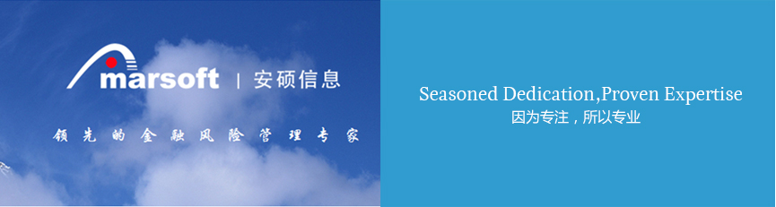

您当前的位置：首页 > 新闻中心 累计服务的客户超过上...
新闻中心 NEWS CENTER
累计服务的客户超过上百家，执行IT信息化咨询项目累计超过300个
日期：2016-03-15 来源：上海安硕 作者：上海安硕
上海安硕信息技术股份有限公司（简称“安硕信息”，股票代码300380）是国内知名金融IT上市公司，中国最大的金融资产风险管理整体解决方案提供商之一多年来一直在该领域保持领先的市场地位。公司总部设在上海，在北京、重庆、深圳、苏州、厦门均设有子/分公司，目前员工人数近1500人。

目前，安硕信息拥有系列化的信贷管理系统、风险管理系统、信托管理系统、P2P网贷系统、供应链融资系统等自主可控的软件产品，多年来持续为各类金融及非金融客户提供业务咨询、系统开发与实施、数据服务等服务，包括国有商业银行、股份制商业银行、外资银行、城商行、农商行、农信社、信托公司、保险公司、互联网金融、上市企业等在内的金融机构和非金融机构客户数百家，在国内金融信贷风控领域市场占有率全国领先。